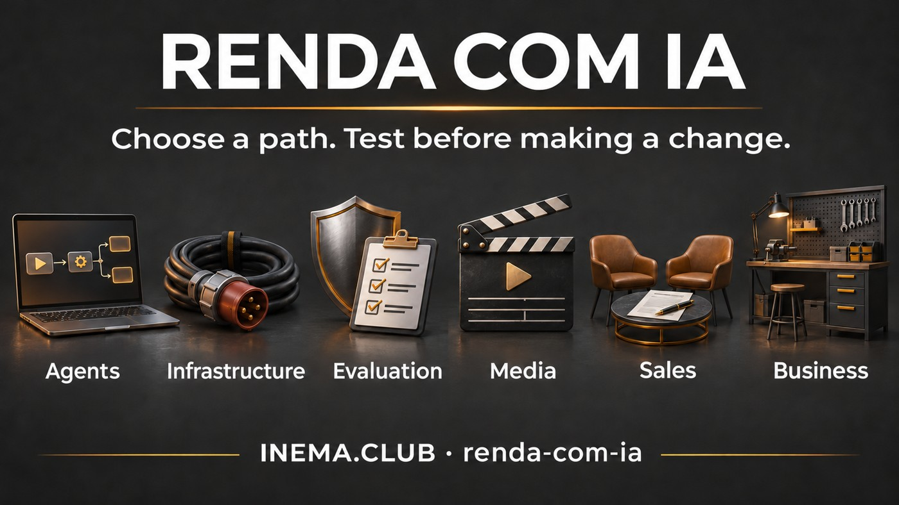

Free professional investigation kit.
Use the experience you already have to investigate your next step before spending months on a new career.
You want to stay useful at work while artificial intelligence takes on more tasks. Renda com IA is a free kit for professionals who want to investigate alternatives without deciding based only on excitement or fear. It compares paths, provides worksheets for talking with hiring decision-makers, and organizes a 30-day experiment. You can read the guide and fill out the documents in a spreadsheet or text editor; local automatic checking is optional. The result is a better-investigated hypothesis, with no promise of income or employment.

Video in Portuguese, with Portuguese subtitles.
When producing text or code becomes easier, value may shift toward understanding the request, checking the result, and earning the client’s trust. The point that holds up this delivery is the bottleneck.
“I need a quote.”
Points out the missing information.
Checks the data and approves the response.
The bottleneck may be here: there isn’t enough information to decide.
2028 is a preparation horizon. This is not a certain date for the end of your job. The paths below are hypotheses to investigate in your context, with no salary ranking.
Choose two to explore. Compare your experience with the proof you can produce now.
On mobile, swipe the table to see all columns.
| Path | Where your judgment comes in | First proof | What to confirm |
|---|---|---|---|
| Agent deployment | Understand the routine and check the deliverable | Triage of fictional requests with human review | Who needs this and what integration would be required |
| Infrastructure | Install, maintain, and take responsibility for physical work | Training map and conversation with a professional | Local requirements, institutions, and employers |
| Evaluation and safety | Define success and find failures | Repeatable test with invented data | Required knowledge and environment authorization |
| Media production | Choose the message and direct production | Portfolio piece with audience feedback | Who would use the piece and what quality they expect |
| Trust-based sales | Understand the commitment and negotiate a feasible deliverable | Exploratory conversation with anonymous notes | How a purchase happens and who makes the decision |
| Business with agents | Find customers and deliver consistently | Demonstration of a small service | Demand, cost, and risk before trying to scale |
None of these proofs replaces professional training. The kit does not teach electrical work and does not authorize you to test systems belonging to others.
“My equipment won’t turn on. How much does it cost?”
“What’s the model? What happened before it failed?”
Does the question make sense? Did the AI invent a price?
Compare with the current approach
Two hypotheses that make use of your experience.
Who does or hires for this work?
A small test or a training roadmap.
Continue, adjust, abandon, or research.
METR measures performance on software tasks. Its 50% success horizon is not the same as working confidently on your own at a company. Read the limitations at METR.
Data centers’ share of U.S. electricity consumption
Anthropic announced an initiative to train deployment engineers with partners. An announced goal does not mean a guaranteed job or open enrollment. Source: Anthropic.
Complete sources and limitations (in Portuguese) · Checked on 16/11/2026. U.S. salaries and personal earnings were not used as promises of results.
You don’t need this section to understand what’s above. The documents work without AI; Python is optional for checking the entries.
Download the complete kit as a ZIP
Extract the ZIP and open the folder renda-com-ia. Go to the folder kit and start with the COMECE-AQUI.md document, which opens in a text editor. You don’t need an account, key, Git, or internet connection to fill out the templates.
The checker runs with Python 3, without installing libraries, accessing the network, or calling AI. It shows empty fields and invalid decisions. It does not verify whether the content is true, whether the demonstration works, or which profession you should choose.
Install Python 3 from the official python.org website and enable the option to make the command available in the terminal. Open the extracted folder in File Explorer, click the address bar, type cmd, and press Enter. Run:
py -3 scripts/conferir.py kit/exemplo.csv
Use Python 3 installed from python.org or through your system’s package manager. In the terminal, go to the extracted renda-com-ia folder (you can drag it in to complete the path after cd). Run:
python3 scripts/conferir.py kit/exemplo.csv
The example returns two rows with 6/6 fields and decisions ajustar e continuar. This means complete data entry, with no career assessment. To use your data, copy modelo.csv to minha-investigacao.csv in the kit folder, fill it out, and run:
python3 scripts/conferir.py kit/minha-investigacao.csv
On Windows, replace python3 with py -3. Keep the column names and IDs agentes, infra, avaliacao, midia, vendas, negocio. Valid decisions: continuar, ajustar, abandonar, pesquisar. Text containing commas needs quotation marks in the CSV. Links and evidence notes can point to your own files.
Exit code 0: all fields are filled in;1: fields are missing;2: file is invalid or unavailable. A result of 1 is expected with the empty template. To view JSON, add --json to the command.
If you see “command not found,” check your Python installation. If you see “incorrect header,” go back to the original template and keep the seven columns. The kit files are in Portuguese; the guide has EN and ES versions.
The kit is ready when you have a written hypothesis, a recorded conversation, a reviewable proof, and a decision. A filled-in evidence field is only a reference: you still need to open and evaluate the file.
If the conversation or test didn’t happen, record the gap. Abandoning a hypothesis can prevent wasted effort. Your next experiment starts with what you learned.